import pandas as pd, io
#from google.colab import files
from Bio import AlignIO
import numpy as np
from Bio.Seq import Seq
from Bio import Entrez, SeqIO
from Bio.Align import MultipleSeqAlignment
import shutil
from Bio.Phylo.TreeConstruction import DistanceCalculator, DistanceTreeConstructor
from Bio import Phylo
import subprocess, re3 Анализ NGS данных человека
4 Филогенетика (теория)
Типичный пайплан состоит из нескольких шагов: 1) Подбор данных 2) Множественное выравнивание 3) Подбор параметров для построения дерева 4) Оценка дерева 5) Визуализация 6) Сравнение с другими деревьями
4.1 Разница между деревьями видов и деревьями генов
Есть два разных типа деревьев:
- Дерево видов
- Дерево генов
В чем они могут отличаться?
- Incomplete lineage sorting - случайное наследование древних полиморфизмов при быстром видообразовании (например при фрагментации популяции). По итогу - неравномерное распределение аллелей по потомкам.
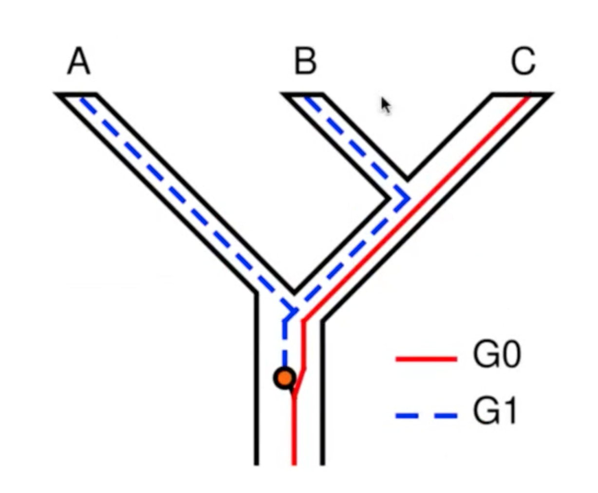
Introgression - Гибридизация двух разных видов и если гибрид плодовитый - часть генов от одного вида “просачивается” в другой
Дупликация генов
Гомологи имеют общее происхождение, есть 2 варианта: 1) Ортологи - разошлись из-за видообразования. Например альфа-гемоглобины друг с другом 2) Паралоги - в одном геноме 2 копии одного гена. В процессе эволюции их функции могут расходится (нео-функционализация). Например альфа- и бетта- гемоглобины друг с другом
Разные варианты гомологии - в статье Orthologs, paralogs, and evolutionary genomics (Koonin 2005)
Дупликация с последующей потерей генов. Аналогично incomplete lineage sorting
Горизональный преренос генов у бактерий, который портит картинку. Если нет уверенности, что это именно он повлиял, можно провести проверку: GC-состава в гене и вокруг него, по кодонам как-то
4.2 Tangled tree - сравнение деревьев между собой (Phylogeny reconcilitation)
Например с помощью пакета R cophyloplot. Можно сравнить получившиеся деревья видов и генов, хозяин - симбионт и тд.
4.3 Модели деревьев (больше инфы на сайте)
4.3.1 Substitution model Jukes-Cantor
Все нуклеотиды имеют одинаковую частоту и одинаковую вероятность замены
4.3.2 Substitution model GTR
Разные частоты нуклеотидов, разные скорости их замен (транзиций и трансверсий)
Например в ML частоты нуклеотидов мы узнаем из множественного выравнивания, а модели скоростей замен программа подбирает сама, чтобы логарифм функии правдоподобия был максимальным.
5 Филогенетика (практика)
Практика по ноутбуку
5.1 Введение
Ген, кодирующий Цитохромоксидазу подкомплекс I (COI), широко используется как стандартный ген для ДНК-баркодирования у рыб: он, с одной стороны, сравнительно консервативен и, с другой, содержит достаточно вариаций между видами, что позволяет в большинстве случаев успешно идентифицировать таксоны.
COI применяется для обнаружения подмены рыб и признан удобным для мониторинга видов в пищевой промышленности.
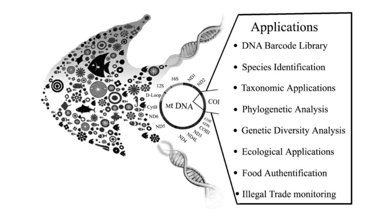
Однако, COI не всегда хорошо разделяет некоторые виды рыб, например, такое может произойти с тунцом (например, виды T. albacares - yellowfin tuna, T. thynnus - bluefin tuna и Thunnus obesus - bigeye tuna) (Viñas and Tudela 2009)
Одна из возможных причин: гибридизация и последующая митохондриальная интрогрессия (ситуация, когда мтДНК одного вида переходит в другой вид через гибридизацию, и затем закрепляется в его популяции).
В рамках ноутбука можно научиться следующему:
определять возможное происхождение последовательности на основе топологии филогенетиечского дерева
строить базовое множественное выравнивание (MAFFT) и филогегетическое дерево (FastTree), используя командную строку
выгружать нуклеотидные последовательности из NCBI, подавая на вход список из GenBank айди
генерировать аннотационные файлы для визуализации дерева в ITOL
осущеставлять базовые манипуляции с деревом в ITOL
5.2 Install dependencies
Biopython, Scikit-bio, pandas, mafft, FastTree
#| eval: false
conda activate py3_study
pip install biopython==1.83 scikit-bio==0.6.1 pandas==2.2.2
conda install bioconda::mafft
mafft --version
conda install bioconda::fasttree
FastTree -help | head -n 2Gblocks (trimAI) - находит консервативные блоки в выравнивании
#| eval: false
conda install bioconda::gblocks5.3 Load metadata
#| eval: false
git clone https://github.com/rybinaanya/fish_detective.gitmeta = pd.read_csv('fish_detective/metadata.tsv', sep='\t', index_col=0)
meta.head()| sample_id | accession | claimed_name | sample_type | restaurant | true_species | city | display_name | restaurant_color | |
|---|---|---|---|---|---|---|---|---|---|
| 0 | S001 | KU168615 | Tuna (Albacore) | reference | REFERENCE | Albacore | Bristol | Albacore | #FFF1CB |
| 1 | S002 | KU168616 | Tuna (Albacore) | reference | REFERENCE | Albacore | Exeter | Albacore | #FFF1CB |
| 2 | S003 | KU168617 | Tuna (Albacore) | restaurant | PimpyShrimpy | Albacore | London | Tuna (Albacore) | #C2E2FA |
| 3 | S004 | KU168618 | Tuna (Bluefin) | restaurant | PimpyShrimpy | Atlantic Bluefin tuna | Bristol | Tuna (Bluefin) | #C2E2FA |
| 4 | S005 | KU168619 | Tuna (Bluefin) | restaurant | RedPriceSushi | Yellowfin tuna | Liverpool | Tuna (Bluefin) | #B7A3E3 |
Distribution of claimed names
meta.claimed_name.value_counts()claimed_name
Tuna 31
Eel 15
Seabass* 13
Yellowtail 12
Mackerel 8
Tuna (Yellowfin) 6
Tuna* 4
Seabream 3
Tuna (Albacore) 3
Tuna (Bluefin) 2
Swordfish 2
Seabass 2
Tuna (Spicy) 1
Tunaa 1
Eel (grilled) 1
Eel (Freshwater)a 1
Eel* 1
Eel (Freshwater) 1
Seabassa 1
Eela 1
King Fish 1
King Fish (Tasmanian) 1
Barramundia 1
Black Cod 1
Flying Fish eggs 1
Snapper 1
Name: count, dtype: int64Distribution of restaurants
meta.restaurant.value_counts()restaurant
REFERENCE 67
PimpyShrimpy 21
RedPriceSushi 16
SwagRoll 11
Name: count, dtype: int645.4 Get sequences from NCBI
#| eval: false
> fish_detective/sequences.fasta
tail -n +2 fish_detective/metadata.tsv | \
while IFS=$'\t' read -r line; do
# Разбиваем строку на массив
IFS=$'\t' read -ra cols <<< "$line"
accession=${cols[2]}
[ -z "$accession" ] && continue # если значение пустое - пропусти
echo "Скачиваю $accession ..."
efetch -db nucleotide -id "$accession" -format fasta >> fish_detective/sequences.fasta
echo '' >> fish_detective/sequences.fasta
done
5.5 Multiple sequqnce alignment MAFFT - итеративный алгоритм
#| eval: false
mafft --auto --thread -1 fish_detective/sequences.fasta \
> fish_detective/alignment.fasta 2> mafft.log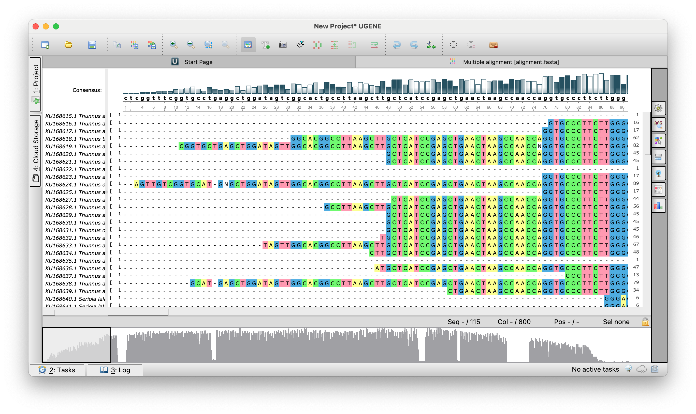
Видно, что в начале и в конце много пропусков. Мы хотим их обрезать.
BMGE -i fish_detective/alignment.fasta -t AA -m BLOSUM30 \
-of fish_detective/alignment.trim.fasta5.6 FastTree (~ML) and NJ-methods
FastTree -gtr -nt -gamma -boot 1000 fish_detective/alignment.trim.fasta \
> fish_detective/tree_fasttree.nwk
echo "FastTree → tree_fasttree.nwk"Сначала мы получаем NJ-like tree (distnace matrix - is based on susbtitution model JC). А потом перебираем не все топологии, а либо отрубаем кусочек дерева и снова пристыковаваем и смотрим на правдоподбие / пошафлить перетасовать узлы в пределах клады и также чекнуть правдоподбие
-gtr - использование модели эволюции GTR (General Time Reversible) для нуклеотидных последовательностей
-gamma - учет различной скорости эволюции разных позиций с помощью гамма-распределения
from Bio.Phylo.TreeConstruction import DistanceCalculator,DistanceTreeConstructor
from Bio import PhyloNJ (p-distance = 1-identity)
aln = AlignIO.read("fish_detective/alignment.trim.fasta","fasta")
# compute p-distance = 1-identity
calc = DistanceCalculator('identity')
# create NJ tree nased on pairwise distance matrix
constructor = DistanceTreeConstructor(calc, 'nj')
tree_nj = constructor.build_tree(aln)
# write output to a file
_ = Phylo.write(tree_nj, "fish_detective/tree_nj.nwk", "newick")5.7 ITOL files
Теперь визуализируем дерево в ITOL
Чтение Newick дерева и получение названий листьев
tree_fasttree = Phylo.read('fish_detective/tree_fasttree.nwk', 'newick')
tips_fasttree = [t.name for t in tree_fasttree.get_terminals()]
print(tips_fasttree[:5])['KU168646.1', 'KU168622.1', 'KU168632.1', 'KU168644.1', 'KU168624.1']Создание словаря для преобразования ID в читаемые метки и создание файлов меток и цветов для iTOL в нужном формате
tips2label=dict(zip(meta.accession, meta.display_name))
with open('fish_detective/labels.txt', 'w') as f:
_ = f.write('\n'.join(['LABELS', 'SEPARATOR COMMA', 'DATA'])+'\n')
for tip in tips_fasttree:
clean_tip = tip.split('.')[0]
_ = f.write(f"{tip},{tips2label[clean_tip]}\n")
acc2color = dict(zip(meta['accession'], meta['restaurant_color']))
with open('fish_detective/color_labels.txt', 'w') as f:
_ = f.write('TREE_COLORS\nSEPARATOR COMMA\nDATA\n')
for tip in tips_fasttree:
clean_tip = tip.split('.')[0]
color = acc2color.get(clean_tip, '#CCCCCC')
_ = f.write(f'{tip},label_background,{color}\n')Annotation file to color labels
mapLoc2color = dict(zip(meta.restaurant, meta.restaurant_color))
tips2color=dict(zip(meta.accession, meta.restaurant_color))
with open('fish_detective/colorstrip_groups.txt', 'w') as f:
_ = f.write('DATASET_COLORSTRIP\n')
_ = f.write('SEPARATOR COMMA\n')
_ = f.write('DATASET_LABEL,Sample groups\n')
_ = f.write('COLOR,#000000\n') # рамка dataset-а (опц.)
_ = f.write('LEGEND_TITLE,Sample origin\n')
_ = f.write('LEGEND_SHAPES,1,1,1,1\n') # форма значков (1=квадрат)
_ = f.write('LEGEND_COLORS,' + ','.join(mapLoc2color.values()) + '\n')
_ = f.write('LEGEND_LABELS,' + ','.join(mapLoc2color.keys()) + '\n')
_ = f.write('DATA\n')
for tip in tips_fasttree:
clean_tip = tip.split('.')[0]
_ = f.write(f'{tip},{tips2color[clean_tip]}\n')To upload annotation files, go to Datasets, push Upload button
To make ITOL display bootstrap values, go to Advanced -> Branch metadata display > Bootstraps/metadata -> select Display -> select Text
Чтобы укоренитрь дерево - наведите мышкой на нужную ветку -> клик -> Tree structure -> Re-root tree here
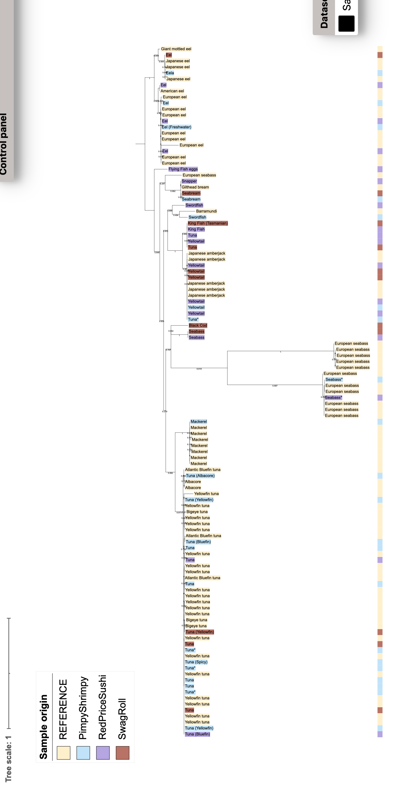
6 Выполнение домашнего задания по филогенетике
Сравнительная филогеография кошачьих Индии: повторный анализ данных
Цель работы: воспроизвести филогенетический анализ из статьи Mukherjee et al. (2010) “Ecology Driving Genetic Variation: A Comparative Phylogeography of Jungle Cat (Felis chaus) and Leopard Cat (Prionailurus bengalensis) in India” (Mukherjee et al. 2010)
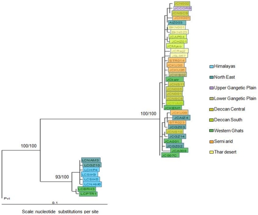
6.1 Объекты исследования
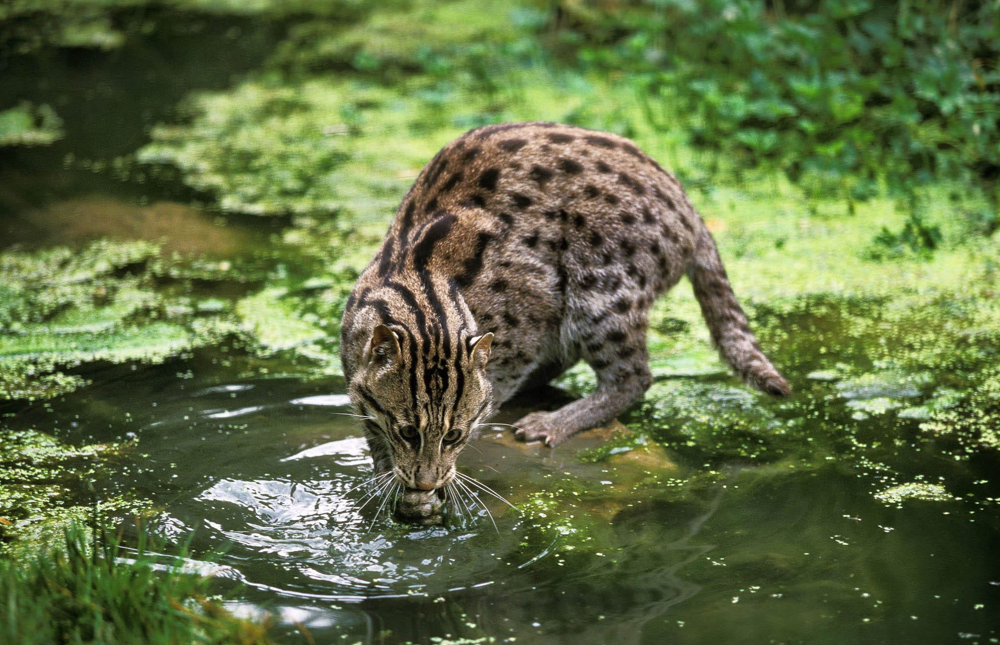
6.2 Подготовка метаданных
Метаданные были получены из дополнительных материалов статьи с добавлением информации по внешней группе (Prionailurus viverrinus) из базы данных NCBI.
6.2.1 Поиск последовательностей для внешней группы
#| eval: false
# Поиск и извлечение информации о последовательностях кошки-рыболова
(echo -e "AccessionVersion\tGi\tTitle\tOrganism\tTaxId\tSlen\tMolType\tTopology\tBiomol\tCreateDate"
esearch -db nucleotide -query "Prionailurus viverrinus and (cytb or NADH5) not predicted" | \
efetch -format docsum | \
xtract -pattern DocumentSummary \
-element AccessionVersion Gi \
-element Title \
-element Organism TaxId \
-element Slen MolType Topology Biomol \
-element CreateDate) | column -t -s $'\t' | sort -k4Для анализа были выбраны: - JN811043.1 (611 п.н.) для гена NADH5 - JN811056.1 (800 п.н.) для гена цитохрома b
6.2.2 Структура метаданных
# Просмотр структуры файла метаданных
head Phylogenetics_hw/metadata.tsv | column -t -s $'\t' # Анализ состава выборки по видам
import pandas as pd
meta = pd.read_csv('Phylogenetics_hw/metadata.tsv', sep='\t')
print("Распределение по видам:")
print(meta.Species.value_counts())Распределение по видам:
Species
Jungle cat 55
Leopard cat 40
Fishing cat 1
Name: count, dtype: int64# Географическое распределение образцов
print("\nРаспределение по биогеографическим зонам:")
print(meta.Biogeographic_zone.value_counts())
Распределение по биогеографическим зонам:
Biogeographic_zone
Western Ghats 19
Himalayas 19
Deccan Central 11
North East 9
Thar Desert 9
North East 9
Deccan South 8
Semi Arid 8
Lower Gangetic Plain 2
Upper Gangetic Plain 1
- 1
Name: count, dtype: int646.3 Загрузка последовательностей из NCBI
Последовательности двух генов были загружены отдельно для последующего объединенного анализа.
#| eval: false
# Загрузка последовательностей цитохрома b и NADH5
> Phylogenetics_hw/cytb_sequences.fasta
> Phylogenetics_hw/NADH5_sequences.fasta
tail -n +2 metadata.tsv | \
while IFS=$'\t' read -r line; do
IFS=$'\t' read -ra cols <<< "$line"
NADH5_acc=${cols[1]}
cytb_acc=${cols[2]}
[ -z "$cytb_acc" ] && continue
echo "Загрузка последовательностей: $NADH5_acc (NADH5) и $cytb_acc (cytb)"
efetch -db nucleotide -id "$cytb_acc" -format fasta >> Phylogenetics_hw/cytb_sequences.fasta
echo '' >> Phylogenetics_hw/cytb_sequences.fasta
efetch -db nucleotide -id "$NADH5_acc" -format fasta >> Phylogenetics_hw/NADH5_sequences.fasta
echo '' >> Phylogenetics_hw/NADH5_sequences.fasta
done6.4 Множественное выравнивание
Для каждого гена было выполнено независимое выравнивание с использованием MAFFT.
#| eval: false
# Множественное выравнивание последовательностей
mafft --auto --thread -1 Phylogenetics_hw/cytb_sequences.fasta > Phylogenetics_hw/cytb_sequences.align.fasta
mafft --auto --thread -1 Phylogenetics_hw/NADH5_sequences.fasta > Phylogenetics_hw/NADH5_sequences.align.fasta 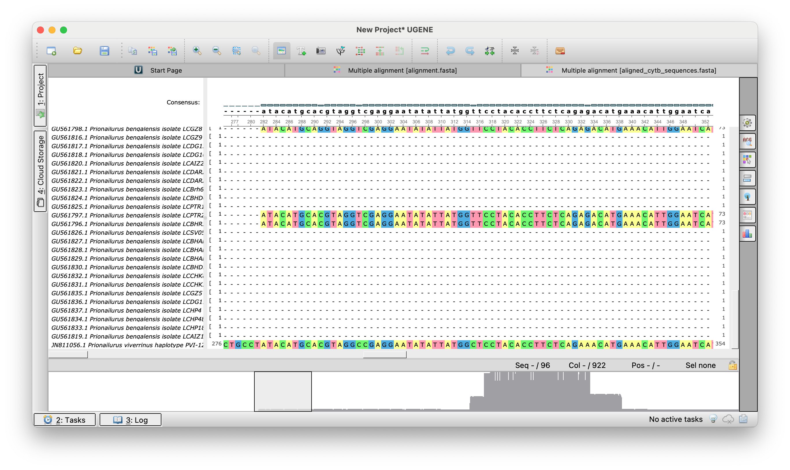
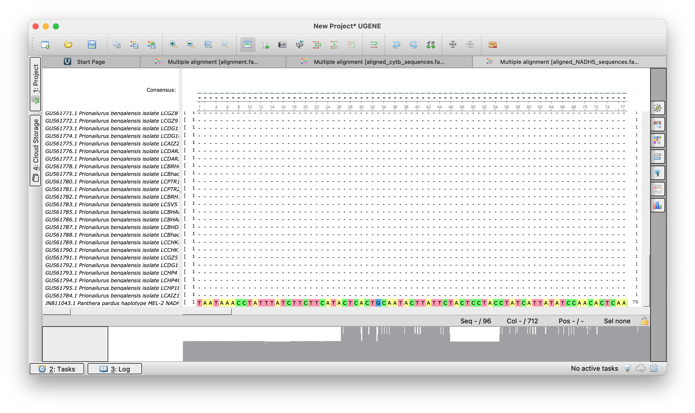
6.4.1 Обрезка неинформативных участков
Для удаления плохо выровненных концевых регионов использовалась программа BMGE.
# Обрезка выравниваний
BMGE -i Phylogenetics_hw/cytb_sequences.align.fasta -t AA -m BLOSUM30 -of Phylogenetics_hw/cytb_sequences.align.trim.fasta
BMGE -i Phylogenetics_hw/NADH5_sequences.align.fasta -t AA -m BLOSUM30 -of Phylogenetics_hw/NADH5_sequences.align.trim.fasta Результат: получены выравнивания длиной, сопоставимой с оригинальным исследованием (303 п.н. для NADH5, 141 п.н. для cytb).
6.5 Конкатенация последовательностей
Для филогенетического анализа последовательности двух генов были объединены.
#| eval: false
# Объединение последовательностей двух генов
mkdir -p Phylogenetics_hw/tree_files
# Извлечение заголовков
grep "^>" Phylogenetics_hw/cytb_sequences.align.trim.fasta | cut -d' ' -f1 > Phylogenetics_hw/headers.txt
# Извлечение и объединение последовательностей
grep -v "^>" Phylogenetics_hw/cytb_sequences.align.trim.fasta > Phylogenetics_hw/cytb_seqs.txt
grep -v "^>" Phylogenetics_hw/NADH5_sequences.align.trim.fasta > Phylogenetics_hw/nadh5_seqs.txt
paste Phylogenetics_hw/cytb_seqs.txt nadh5_seqs.txt | tr -d '\t' > Phylogenetics_hw/sequences.txt
# Создание финального файла
paste -d '\n' Phylogenetics_hw/headers.txt Phylogenetics_hw/sequences.txt > Phylogenetics_hw/tree_files/concatenated_sequences.fasta
# Очистка временных файлов
rm Phylogenetics_hw/headers.txt Phylogenetics_hw/cytb_seqs.txt Phylogenetics_hw/nadh5_seqs.txt Phylogenetics_hw/sequences.txt6.6 Построение филогенетического дерева
Филогенетический анализ выполнен с использованием IQ-TREE с оценкой поддержки узлов.
#| eval: false
# Построение дерева максимального правдоподобия
cd Phylogenetics_hw/tree_files
iqtree -m TEST -s concatenated_sequences.fasta -bb 1000 -alrt 1000 -pre Cats_tree -redo
cd -6.7 Визуализация и аннотация дерева
Для визуализации дерева в iTOL были подготовлены файлы аннотаций.
import pandas as pd
import matplotlib.cm as cm
import matplotlib.colors as mcolors
from Bio import Phylo
# Загрузка данных
meta = pd.read_csv('Phylogenetics_hw/metadata.tsv', sep='\t')
tree = Phylo.read('Phylogenetics_hw/tree_files/Cats_tree.treefile', 'newick')
tips = [t.name for t in tree.get_terminals()]
# Назначение цветов по биогеографическим зонам
states = meta['Biogeographic_zone'].unique()
cmap = cm.get_cmap('tab20')
state_to_color = dict(zip(states, [mcolors.rgb2hex(cmap(i)) for i in range(len(states))]))
meta['color'] = meta['Biogeographic_zone'].map(state_to_color)
# Подготовка словарей для аннотаций
meta['specie_id'] = meta['Species'] + '_' + meta['ID'].astype(str)
acc_clean = meta['Acc_Cyt_b'].str.split('.').str[0].str.strip()
tip_to_label = dict(zip(acc_clean, meta['specie_id']))
tip_to_color = dict(zip(acc_clean, meta['color']))
# Файл читаемых меток
with open('Phylogenetics_hw/tree_files/labels.txt', 'w') as f:
f.write('LABELS\nSEPARATOR COMMA\nDATA\n')
for tip in tips:
clean_tip = tip.split('.')[0]
f.write(f"{tip},{tip_to_label.get(clean_tip, tip)}\n")
# Файл цветов фона меток
with open('Phylogenetics_hw/tree_files/color_labels.txt', 'w') as f:
f.write('TREE_COLORS\nSEPARATOR COMMA\nDATA\n')
for tip in tips:
clean_tip = tip.split('.')[0]
f.write(f"{tip},label_background,{tip_to_color.get(clean_tip, '#CCCCCC')}\n")
# Цветовая полоса по биогеографическим зонам
unique_states = meta[['Biogeographic_zone', 'color']].drop_duplicates()
with open('Phylogenetics_hw/tree_files/colorstrip_groups.txt', 'w') as f:
f.write(f"""DATASET_COLORSTRIP
SEPARATOR COMMA
DATASET_LABEL,Biogeographic zones
COLOR,#000000
LEGEND_TITLE,Biogeographic Zone
LEGEND_SHAPES,{",".join(["1"]*len(unique_states))}
LEGEND_COLORS,{",".join(unique_states["color"])}
LEGEND_LABELS,{",".join(unique_states["Biogeographic_zone"])}
DATA
""")
for tip in tips:
clean_tip = tip.split('.')[0]
f.write(f"{tip},{tip_to_color.get(clean_tip, '#CCCCCC')}\n")6.8 Результаты
6.8.1 Визуализация филогенетического дерева
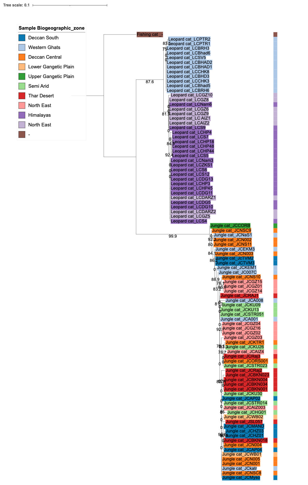
6.8.2 Основные выводы
Видовое разделение: Леопардовые кошки (Prionailurus bengalensis) образуют четко отделенный кластер от болотных рысей (Felis chaus), что подтверждает, что подтверждает их различия
Географический паттерн: Особи леопардовых кошек демонстрируют более выраженную географическую структуру по сравнению с болотными рысями, что может указывать на различия в истории популяций и расселении.
Статистическая поддержка: Высокие значения бутстреп-поддержки (>75%) для большинства узлов свидетельствуют о надежности полученной топологии дерева.
7 Основы генетики сложных признаков и GWAS
По материалам лекции Екатерины (https://github.com/kkmarkel)
7.1 Введение
7.1.1 Исторический контекст
- 1886 год — Грегор Мендель: Изучал наследование признаков у гороха. Предположил существование дискретных переносчиков наследственной информации — генов. Ввел ключевые понятия доминантного и рецессивного признака.
- 1892 год — Гальтон и Пирсон: Заложили основы биометрии — изучения количественных, вариативно изменяющихся признаков.
7.1.2 От генов к фенотипу
- Генетический код содержит наследственную информацию, определяющую фенотип — совокупность всех наблюдаемых признаков организма.
- Информация организована в гены, расположенные на хромосомах.
7.1.3 Сложные признаки (Complex Traits)
Это признаки, на которые влияет множество факторов: как генетических (полигенных), так и внешних (среда, образ жизни). К ним относятся, например, рост, вес, предрасположенность к распространенным заболеваниям.
Из-за множества влияющих факторов такие признаки в популяции имеют непрерывное распределение (часто нормальное).
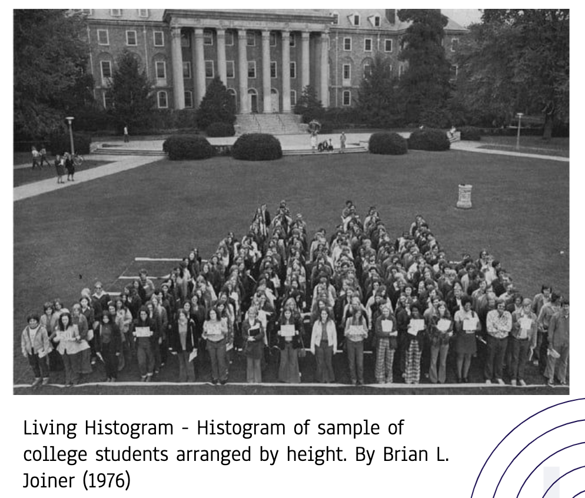
Именно сложные признаки представляют основной интерес для генетических ассоциативных исследований (GWAS).
7.1.4 Основной объект изучения: SNP
SNP (Single Nucleotide Polymorphism, снип) — однонуклеотидный полиморфизм, замена одного нуклеотида в определенной позиции генома. Изучаются чаще, чем крупные структурные варианты (делеции, инсерции, инверсии), так как встречаются значительно чаще.
Поскольку мы — диплоидные организмы (получаем по одному набору хромосом от каждого родителя), каждый генетический вариант представлен двумя аллелями. Индивидуум может быть:
- Гомозиготой (два одинаковых аллеля).
- Гетерозиготой (два разных аллеля).
7.1.5 Спектр генетических вариантов
Существует обратная зависимость между частотой встречаемости аллеля в популяции и силой его эффекта на фенотип.
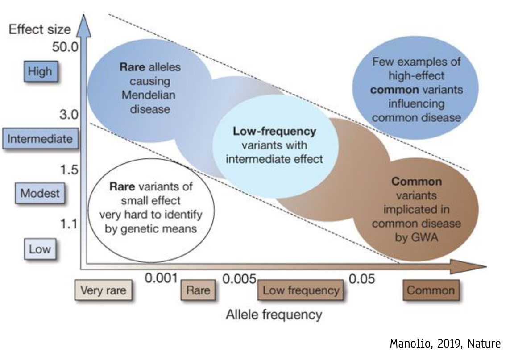
- Редкие варианты с сильным эффектом (левый верхний квадрант):
- Вызывают моногенные (менделевские) заболевания.
- Для их поиска традиционно используется анализ сцепления (linkage analysis) внутри семей.
- Редкие варианты со слабым эффектом (левый нижний квадрант):
- Их вклад в сложный признак трудно определить. Для обнаружения требуются огромные выборки и методы GWAS.
- Варианты средней частоты и эффекта (центр):
- Часто проявляют эффект только во взаимодействии с другими генами или средой (эпистаз, пенетрантность).
- Частые варианты со слабым эффектом (правый нижний квадрант):
- Частота > 5%. Не являются высокопатогенными сами по себе, но их комбинации и взаимодействия вносят вклад в предрасположенность к распространенным заболеваниям.
- Частные варианты с сильным эффектом (правый верхний квадрант):
- Ключевая цель GWAS. Это варианты, которые закрепились в популяции, но существенно влияют на риск развития сложных заболеваний (диабет, сердечно-сосудистые болезни, болезнь Альцгеймера и др.).
7.2 GWAS (Genome-Wide Association Study)
7.2.1 Отличие от анализа сцепления
| Признак | Анализ сцепления (Linkage) | GWAS (Ассоциация) |
|---|---|---|
| Применение | Моногенные, редкие (часто орфанные) заболевания | Сложные, полигенные, распространенные признаки/болезни |
| Выборка | Члены одной или нескольких семей | Большие, несвязанные популяционные выборки (случаи и контроли) |
| Разрешение | Низкое (определяется рекомбинациями в семье) | Высокое (на уровне отдельных вариантов, SNP) |
| Гипотеза | Часто есть гипотеза о гене-кандидате или локусы известны | Гипотеза отсутствует — скрининг всего генома |
| Стат. мощность | Ниже для сложных признаков | Выше при больших выборках |
7.2.2 Преимущества и цели GWAS
- Высокая статистическая мощность (при больших выборках).
- Высокое разрешение — можно выделить конкретные геномные локусы.
- Гипотеза-независимый подход — анализ всех вариантов на равных.
- Цель: Обнаружить статистически значимую связь между генотипом в конкретном локусе и признаком/заболеванием.
- Дальнейший анализ: Интерпретация ассоциированных локусов позволяет выдвигать гипотезы о новых биологических путях и механизмах развития признака.
7.2.3 Требования для проведения GWAS
- Референсный геном и каталог генетических вариантов.
- Доступные технологии генотипирования (NGS, микрочипы).
- Большие размеры выборок (тысячи и десятки тысяч индивидуумов) для достижения достаточной статистической мощности.
- Корректный дизайн исследования и продвинутые статистические методы.
7.3 Основные шаги GWAS
- Подготовительная фаза
- Дизайн исследования: Определение цели, мощности выборки
- Сбор выборки: Балансировка кейсов и контролей по полу, возрасту, происхождению
- Фенотипирование: Точное измерение признаков (количественных или бинарных)
- Pre-GWAS (Контроль качества данных)
- Контроль качества образцов: Исключение низкокачественных, загрязненных, родственных
- Контроль качества вариантов
- Импутация: Восстановление недостающих данных через референсные панели
- GWAS (Статистический анализ)
- Генотипирование: WGS (полное) или микрочипы (таргетное)
- Поправки: На популяционную стратификацию (PCA)
- Модели: Линейная/логистическая регрессия с учетом ковариат
- Коррекция: Строгий порог значимости 5×10⁻⁸ из-за множественного тестирования
- Post-GWAS (Интерпретация результатов)
- Визуализация: Манхеттен-плот для выявления значимых локусов
- Полигенные шкалы: Расчет индивидуальных рисков PRS
- Валидация: Проверка на независимой когорте
- Функциональный анализ ассоциированных генов
- Построение молекулярных путей и сетей
- Формулирование новых гипотез
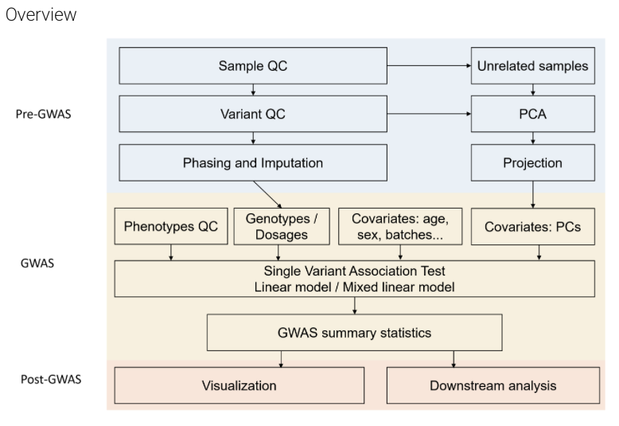
7.3.1 Подготовительная фаза
7.3.1.1 Группа пациентов
Предпочтительны индивидуумы с ярко выраженным фенотипом, ранним началом заболевания или семейной историей.
7.3.1.2 Контрольная группа
- Должна максимально соответствовать группе случаев по полу, возрасту, этническому происхождению.
- Не должна иметь изучаемого признака/заболевания.
7.3.1.3 Популяционная стратификация
Это систематическая разница в частотах аллелей между группами случаев и контролей, вызванная не ассоциацией с болезнью, а различиями в происхождении (ancestry).
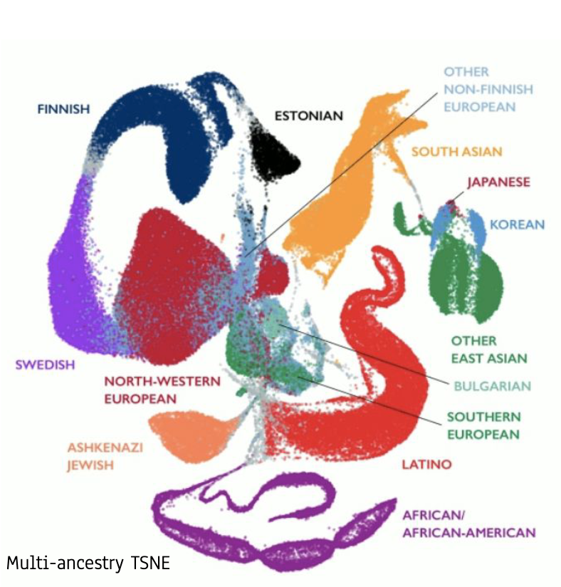
Решение:
- Набирать когорты из генетически однородной популяции.
- Использовать методы коррекции (например, включать главные компоненты PCA в качестве ковариат в статистическую модель).
7.3.2 Методы генотипирования
7.3.2.1 Полногеномное секвенирование (WGS)
- Получение полной последовательности ДНК.
- Дорого, но дает исчерпывающую информацию обо всех типах вариантов.
7.3.2.2 Микрочипы для генотипирования (Microarray)
- Анализ предопределенного набора SNP (от 100 тыс. до 5 млн).
- Значительно дешевле WGS.
- Использует специальные зонды (олигонуклеотиды), прикрепленные к чипу, для детекции конкретных аллелей.
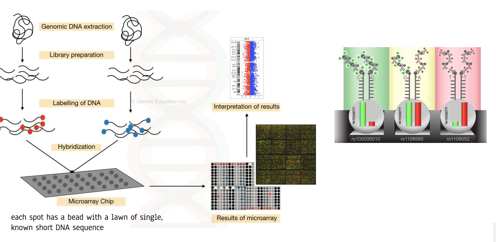
7.3.3 Tag-SNP и гаплотипы
Гены и участки ДНК часто наследуются блоками — гаплотипами. Tag-SNP — это один или несколько SNP, которые “помечают” такой гаплотип и позволяют отслеживать его в популяции, не секвенируя весь блок. Это основа для эффективного дизайна микрочипов.
7.3.4 Импутация генотипов
- Проблема: Микрочип определяет лишь часть всех существующих SNP.
- Решение — Импутация: Используя эталонные панели гаплотипов (например, проекта “1000 геномов”) и известные закономерности сцепления, можно статистически предсказать (импутировать) генотипы в непротипированных позициях.
- Результат: Из 500 тыс. реально отгенотипированных SNP можно получить информацию о 10-20 млн вариантов, что резко повышает мощность исследования.
7.3.5 Контроль качества (Quality Control) в GWAS
Корректный контроль качества данных — критически важный этап перед статистическим анализом. Он проводится на двух уровнях: образцы (индивидуумы) и варианты (SNP).
7.3.5.1 Контроль качества образцов (Sample QC)
Образцы исключаются из анализа при обнаружении следующих проблем:
- Низкий процент генотипирования (call rate): Если для образца успешно определено менее 95-98% SNP, это указывает на проблемы с качеством ДНК (испорченный образец крови/слюны) или с процессом генотипирования.
- Избыточная гетерозиготность: Неожиданно высокий уровень гетерозиготных генотипов по всему геному часто сигнализирует о загрязнении образца ДНК другого человека или о техническом артефакте.
- Несоответствие пола: Рассчитанный по генетическим маркерам пол (например, по гомозиготности в X-хромосоме) не совпадает с заявленным в аннотации.
- Скрытое родство и дубликаты: Наличие генетически близких индивидуумов (родственников) искажает статистику.
- Решение: Попарное сравнение генетической идентичности (Identity-by-Descent, IBD). Если пара образцов имеет высокую долю идентичных аллелей (как у родственников), один из них исключается.
- Также удаляются полные дубликаты одного и того же человека.
- Выбросы по популяционной структуре: Индивидуумы, генетически сильно отличающиеся от основной массы выборки (выпадающие за пределы кластеров на графике PCA), могут исказить результаты из-за стратификации.
7.3.5.2 Контроль качества вариантов (Variant QC)
SNP исключаются из дальнейшего анализа по следующим критериям:
- Низкий процент генотипирования: SNP, для которого генотип не удалось определить у большой доли образцов (например, >5%).
- Отклонение от известной частоты в популяции
7.3.6 Статистический анализ ассоциаций
7.3.6.1 Отношение шансов (Odds Ratio, OR)
Для бинарных признаков (болезнь/здоровье) простой мерой связи является отношение шансов:
\[ \text{Odds Ratio (OR)} = \frac{(\text{Case}_{C} / \text{Case}_{A})}{(\text{Control}_{C} / \text{Control}_{A})} \] Где \(C\) и \(A\) — аллели варианта.
Ограничение: Простой OR не учитывает влияние ковариат (пол, возраст, генетическая структура популяции) и не предполагает конкретной генетической модели наследования (аддитивная, доминантная, рецессивная).
7.3.6.2 Регрессионные модели
Для учета ковариат и различных генетических моделей в GWAS применяются обобщенные линейные модели.
7.3.6.2.1 Линейная регрессия (для количественных признаков)
Используется для признаков в непрерывной шкале (рост, уровень глюкозы, ИМТ).
\[ y = G\beta_G + X\beta_X + \epsilon \]
- \(y\) — наблюдаемый количественный фенотип.
- \(G\) — матрица генотипов (кодируется как 0, 1, 2 для аддитивной модели).
- \(\beta_G\) — величина эффекта варианта на фенотип (основной результат GWAS).
- \(X\beta_X\) — поправка на ковариаты (пол, возраст, главные компоненты PCA).
- \(\epsilon\) — случайная ошибка.
7.3.6.2.2 Логистическая регрессия (для бинарных признаков)
Используется для признаков типа “есть/нет” (заболевание, наличие симптома).
\[ \log\left(\frac{p}{1-p}\right) = G\beta_G + X\beta_X + \epsilon \] Где \(p\) — вероятность наличия заболевания.
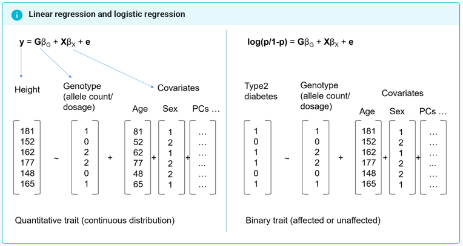
Результат анализа (например, из программы PLINK): Таблица, где для каждого SNP указаны:
- Хромосома, позиция, ID (rs-номер).
- Референсный и альтернативный аллели.
- Статистика эффекта (\(\beta\) или OR) и ее стандартная ошибка.
- P-value — вероятность наблюдать такой эффект при условии, что истинной ассоциации нет (нулевая гипотеза).
7.3.6.3 Коррекция на множественное тестирование
В GWAS мы тестируем гипотезу об ассоциации для миллионов SNP одновременно. При стандартном пороге значимости \(p < 0.05\) мы получили бы десятки тысяч ложноположительных результатов.
Решение — поправка Бонферрони: Уровень значимости делится на число независимых тестов.
\[ \alpha_{\text{GWAS}} = \frac{0.05}{\text{Число независимых тестов}} \approx \frac{0.05}{1,000,000} = 5 \times 10^{-8} \]
Почему ~1 млн тестов? Из-за явления сцепленного наследования (Linkage Disequilibrium, LD), многие SNP наследуются блоками и не являются статистически независимыми. Число “независимых” SNP в геноме человека оценивается именно в этом диапазоне.
7.4 Визуализация и интерпретация результатов
7.4.1 Манхеттен-плот (Manhattan plot)
Классический способ визуализации результатов GWAS.
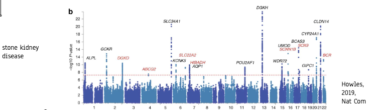
- Ось X: Позиция SNP в геноме (по хромосомам).
- Ось Y: Статистическая значимость ассоциации, преобразованная как \(-log_{10}(\text{p-value})\).
- Пики над пороговой линией (\(-\log_{10}(5\times10^{-8}) \approx 7.3\)) указывают на геномные регионы, достоверно ассоциированные с признаком.
- Группы близко расположенных значимых SNP часто обусловлены LD.
7.4.2 Сцепленное наследование (Linkage Disequilibrium, LD)
Это неслучайное совместное наследование аллелей разных SNP, расположенных близко на хромосоме.
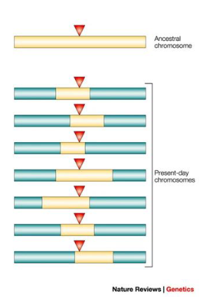
Важность: Ассоциированный SNP, обнаруженный GWAS, часто не является причинным (causal) вариантом, а лишь маркером, находящимся в LD с истинным функциональным вариантом.
7.4.3 Полигенные шкалы риска (Polygenic Risk Scores, PRS)
Суммарная статистика GWAS (оценки эффекта \(\beta\) для каждого SNP) позволяет вычислить для любого человека его полигенную оценку — численную меру генетической предрасположенности к признаку.
\[ PRS_i = \sum_{j=1}^{M} (\beta_j \times G_{ij}) \]
- \(PRS_i\) — полигенная шкала риска для индивидуума \(i\).
- \(\beta_j\) — оценка эффекта SNP \(j\) из GWAS.
- \(G_{ij}\) — генотип индивидуума \(i\) для SNP \(j\) (0, 1, 2).
- \(M\) — число SNP, включенных в расчет (часто тысячи).
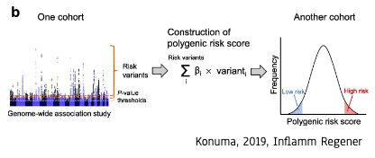
7.5 Важные оговорки и проблемы
7.5.1 Ассоциация ≠ Причинность
Обнаруженная статистическая ассоциация SNP с заболеванием не доказывает, что этот SNP является причиной болезни. Он может быть:
- “Пассажиром” — находиться в LD с истинным причинным вариантом.
- Влиять на болезнь через сложные опосредованные связи.
Для установления причинно-следственных связей требуются дополнительные функциональные исследования и методы.
7.5.2 Проблема “недостающей наследственности” (Missing Heritability)
На заре GWAS возник парадокс: суммарный эффект всех обнаруженных ассоциаций объяснял лишь небольшую долю наследуемости (heritability) сложных признаков, оцененной по семейным исследованиям.
Возможные объяснения:
- Огромное число вариантов со сверхмалым эффектом, которые не достигают порога значимости в GWAS даже на очень больших выборках.
- Редкие варианты (MAF < 1%), не улавливаемые стандартными GWAS-чипами.
- Структурные варианты и эпигенетические факторы, не учитываемые в SNP-ориентированных GWAS.
- Сложные ген-геновые и ген-средовые взаимодействия.
Koonin, Eugene V. 2005. “Orthologs, Paralogs, and Evolutionary Genomics.” Annual Review of Genetics 39 (1): 309–38. https://doi.org/10.1146/annurev.genet.39.073003.114725.
Mukherjee, Shomita, Anand Krishnan, Krishnapriya Tamma, Chandrima Home, Navya R, Sonia Joseph, Arundhati Das, and Uma Ramakrishnan. 2010. “Ecology Driving Genetic Variation: A Comparative Phylogeography of Jungle Cat (Felis Chaus) and Leopard Cat (Prionailurus Bengalensis) in India.” Edited by William J. Murphy. PLoS ONE 5 (10): e13724. https://doi.org/10.1371/journal.pone.0013724.
Viñas, Jordi, and Sergi Tudela. 2009. “A Validated Methodology for Genetic Identification of Tuna Species (Genus Thunnus).” Edited by Manfred Kayser. PLoS ONE 4 (10): e7606. https://doi.org/10.1371/journal.pone.0007606.